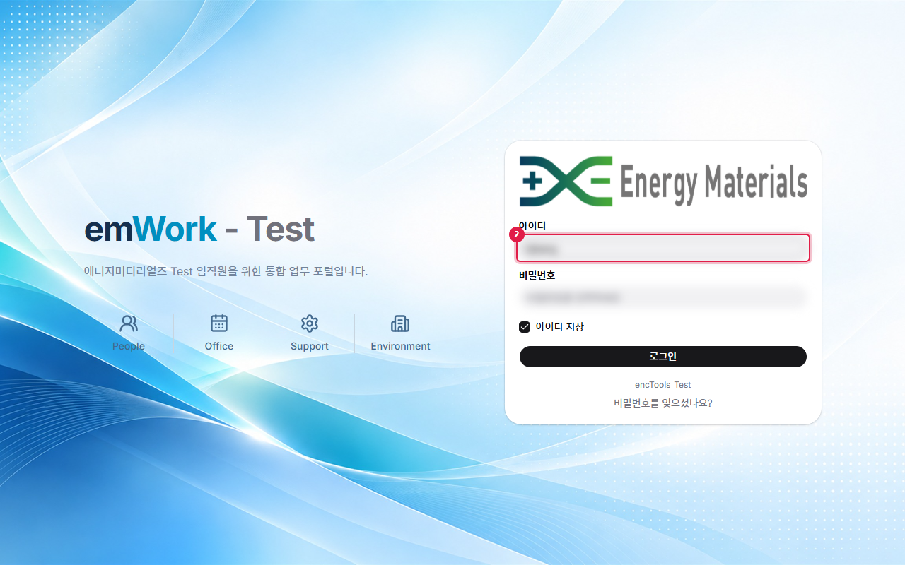
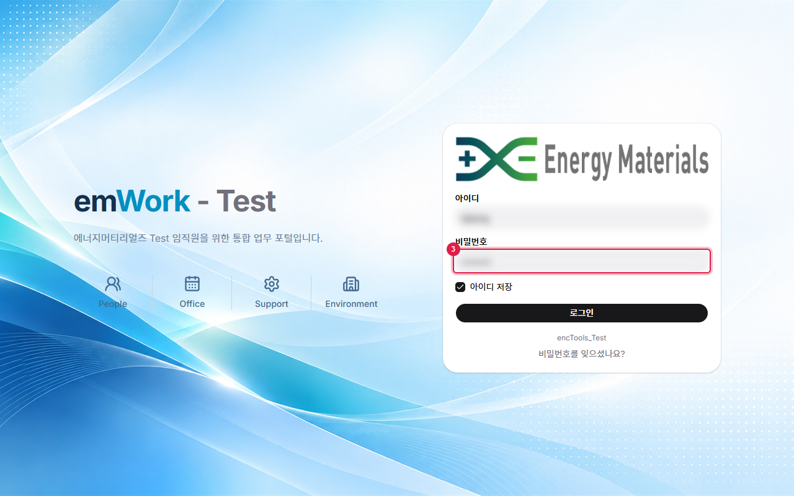
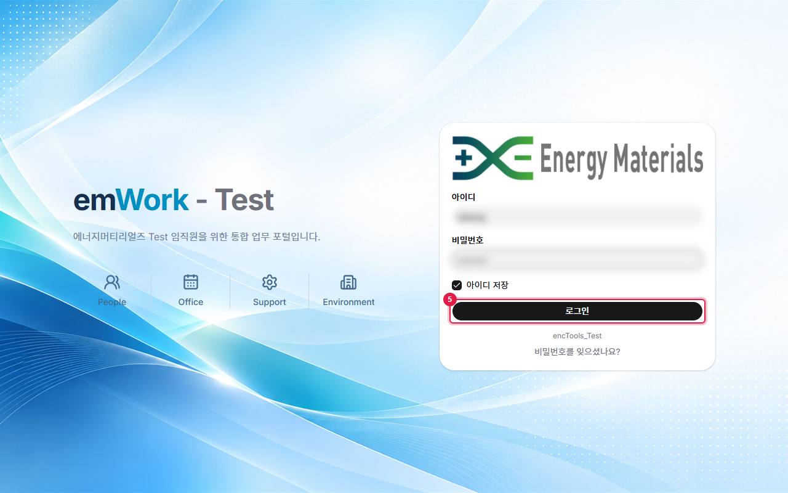
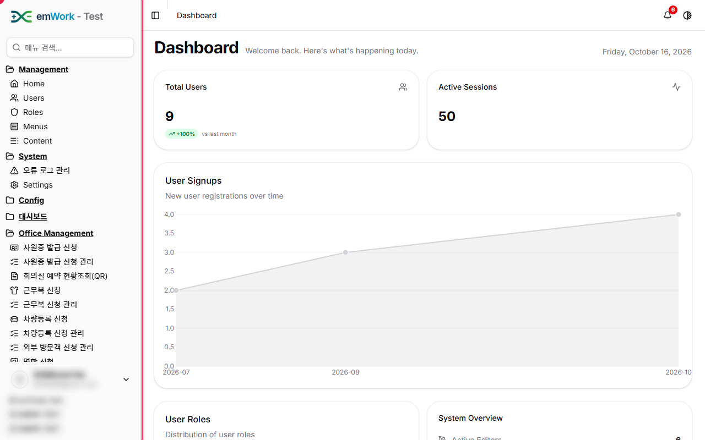
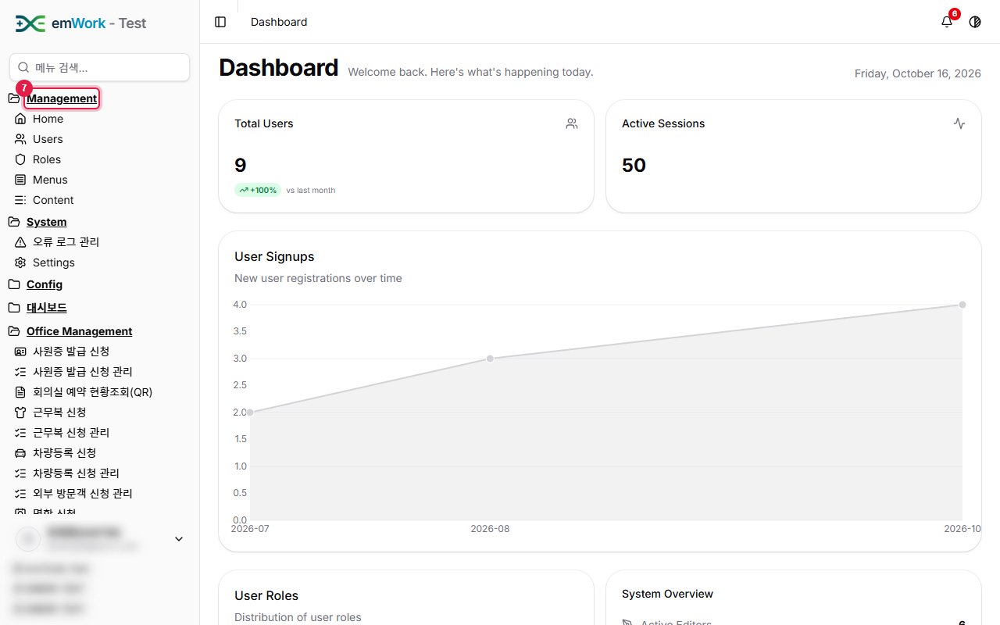

work4ERP 사용자 가이드 › 시작
로그인
주요 내용
- work4ERP에 접속하기 위한 첫 화면입니다. 사용자 ID와 비밀번호로 로그인하며, 로그인한 사용자의 권한에 따라 사이드바에 보이는 메뉴가 달라집니다.
주의 사항
- 비밀번호는 화면에 표시되지 않으며, 로그인 시도는 세션 이력(Config › Session History)에 기록됩니다.
- 공용 PC에서는 '아이디 저장'을 사용하지 마세요.
기능 요약
- 아이디 저장: 다음 접속 시 아이디를 자동 입력합니다.
- 비밀번호를 잊으셨나요?: 비밀번호 재설정을 안내합니다.
1
work4ERP 로그인 화면입니다. 주소창에 접속 주소를 입력해 로그인 화면으로 이동합니다.
2
아이디 입력란에 사용자 아이디를 입력합니다.

3
비밀번호 입력란에 비밀번호를 입력합니다. 비밀번호는 화면에 표시되지 않습니다.

4
'아이디 저장'을 선택하면 다음 접속 시 아이디가 자동으로 입력됩니다.
5
'로그인' 버튼을 클릭합니다.

6
로그인에 성공하면 왼쪽에 사이드바 메뉴가 표시됩니다. 사이드바는 권한에 따라 보이는 메뉴가 다릅니다.

7
사이드바의 'Management' 그룹은 관리자용 기본 관리 메뉴 모음입니다.
